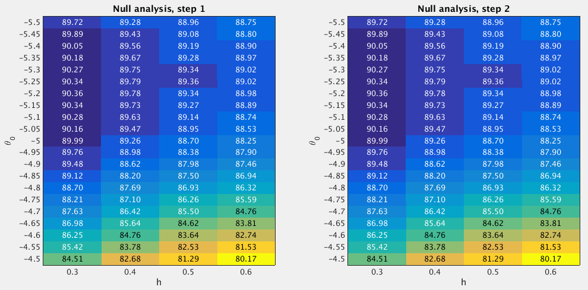

29.2 GSEA Round 2
Last updated: 2017-04-12
Code version: 165dd72eeaecde46dbd09f1ee0d64c1b665f38fb
29.2.1 Fit the null model
From the Round 1 null analysis (Section 29.1), I found that almost 99.9% posterior mass is concentrated on the settings h=(0.3:0.1:0.6)' and theta0=(-5.5:0.25:-4.75). In Round 2, I used a finer grid. Specifically, I used the grids theta0=(-5.5:0.05:-4.5)' and h=(0.3:0.1:0.6)' when fitting the null model. I estimated the (unnormalized) log importance weights (“pseudo-likelihoods”) for all 84 sets of (h,theta0) under null.

After normalizing the log “pseudo-likelihoods” (logw.step*) to posterior probabilities (posp.step*), we can see that almost 99.9% posterior mass is concentrated on the settings of h=(0.3:0.1:0.6)' and theta0 = (-5.5:0.05:-4.6).
theta0.index <- as.character(null.df$theta0) %in% as.character(seq(-5.5,-4.6,by=0.05))
sum(null.df$posp.step2[theta0.index]) ## [1] 0.999446229.2.2 Fit the enrichment model
To perform GSEA, I set h=(0.3:0.1:0.6)' and theta0 = (-5.5:0.05:-4.6), since the null analysis suggests that almost 99.9% posterior mass is placed on these settings. For the log-fold enrichment parameter, I use the grid theta = (0:(5/50):5)', based on the Round 1 enrichment analysis (Section 29.1). The following table lists the GSEA results.